Week 2 : Computing reproducible statistics using Rj
This week we will explore how to use Jamovi to compute and visualise descriptive statistics from a dataset. This will include some revision on Jamovi from last semester and an introduction on how we can use the R coding language to simplify complex data processing.
| Quantitative Methods | |
|---|---|
| Measures of central tendency | |
| Measures of dispersion and spread | |
| Measures of skew and normality |
| Data Skills | |
|---|---|
| Working with the Rj editor to use R code within Jamovi | |
| Learn the basics about functions and variables in R | |
| Computing descriptive statistics using R |
| Open Science | |
|---|---|
| Validating and working with openly available research data | |
| Create a reproducible data analysis script |
1. The Dataset
Note that this is the same dataset as in week 1
We will be exploring data that was collected as part of the ‘Many Labs 3’ project (Ebersole et al. 2016). This collected data from university students in the USA across a wide range of cognitive, behavioural and demographic measures. We will be exploring a subset of this dataset concerning individual differences in personality measures. The experimenters collected data to compute the ‘Big Five’ personality factors from each participant. Wikipedia describes the factors as:
- Conscientiousness (efficient/organized vs. extravagant/careless)
- Agreeableness (friendly/compassionate vs. critical/rational)
- Neuroticism (sensitive/nervous vs. resilient/confident)
- Openness to experience (inventive/curious vs. consistent/cautious)
- Extraversion (outgoing/energetic vs. solitary/reserved)
This is a very simple (Gosling, Rentfrow, and Swann 2003) and influential model that is used to summarise personality differences. Though it is popular, some researchers have criticised big five factors for conceptual and methodological reasons (Block 1995). Read around and form your own view!
The data contains the average of two questions about each factor in which participants responded to questions using a scale from 1 to 7. A value of 1 indicates a low score and a value of 7 is a high score. For example, someone with an extraversion score of 2 is more introverted that someone with an extraversion score of 5.
2. The Challenge
Last week, we looked at how we can spend some time understanding a new dataset and compute some descriptive statistics from it.
Now, we’re going to learn how to use Jamovi and R to make this process more repeatable and more transparent. This will make it much easier for us to come back to the analysis and understand what steps were taken at a later date.
We’ll be working with Jamovi throughout this practical.
Working on campus? You can open Jamovi through AppsAnywhere, either open the desktop application through the start menu on a campus computer or Birmingham’s AppsAnywhere website.
Take a look at these frequently asked questions or ask your tutor if you get stuck.
Working on your own computer? You can install Jamovi (for free!) folling these instructions. Install the ‘Desktop’ application - not the ‘Cloud’ version.
3. Install the Rj Add-On in Jamovi
We’ll be working with the Rj Add-On for Jamovi this week.
Before continuing, install the Rj add-on for jamovi following the guide for installing Jamovi modules. Once installed you should have a new button on the Ribbon menu at the top of Jamovi…
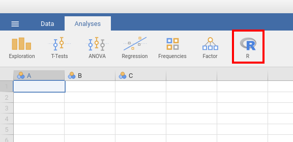
Click on this and select ‘Rj Editor’ to open a window in which we can write R code! Click on the small cog icon and make sure that ‘Output’ is set to ‘Show code and output’.
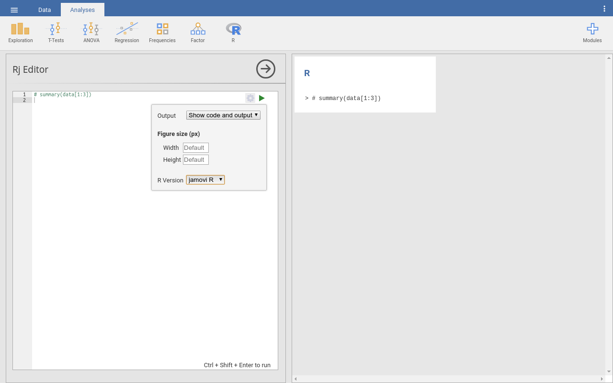
We can use the left-hand window, named Rj editor, to write commands, using the R language. These are the straightforward text commands that tell the computer a series of steps that we wanted to carry out. These commands can be edited and rerun as many times as we need, they can even be shared with collaborators and included as part of scientific publication.
This is a very powerful tool once we have a written set of instructions to work with rather than individually clicking through instructions. Though it takes a bit longer to write the commands, our analysis is much more transparent and reproducible once it is done.
The outputs of the analysis defined in the Rj editor appear on the right-hand side of the Jamovi window as usual. To check this out, let’s explore using or as a calculator.
Try typing a set of sums or equations into the Rj editor. Include one sum on each line and include as many as you like. When you’re ready, you can tell RJ to run the commands by clicking on the green triangle in the top right corner of the RJ editor. This will automatically compute. All of the sums you to find and print the results out in the right hand side window. see the example below.
You can use the following symbols to define your sums.
| Symbol | Operation |
|---|---|
| + | Add |
| - | Subtract |
| * | Multiply |
| / | Divide |
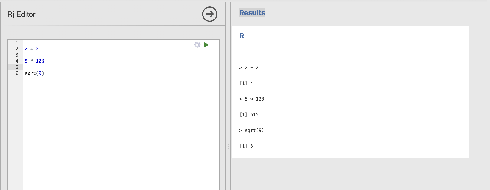
4. Variables and Functions
Often, we don’t just want to see the result of a calculation, we want to store the result to use again later. For this, we want to use variables. For example, here we store the result of a calculator sum in a variable named ‘y’
y <- 2 + 2If you run this in Rj, you’ll notice that we no longer get the number 4 printed to the screen. This is as the output is now caught and stored rather than printed out. If we still want to see what is contained in y, we can use another helpful function named print.
y <- 2 + 2
print(y)Will now also display the content of y.
A variable is an object that provides a labelled space to store information. The <- or = symbols indicate that we’re assigning some information to a variable (the two symbols behave the same way, you could see either).
Crucially, the information on the right hand side is assigned to a variable with the name from the left hand side.
Try asking Copilot for more information about variables in R. We suggest you try the following prompts to get started.
- “Write a simple description of variables in R for a beginner”
- “How can I choose a name for my variable in R”
Make sure to ask follow up questions if you would like more information. Remember to talk with your session tutors if you get stuck.
Notice that the one of the equations in my example is a bit different to the others. The final example uses a function called sqrt as a shortcut to compute the square root of the number nine.
The sqrt function calculates the square root of a given number. In R code, this looks something like this:
sqrt(x)with the ‘x’ replaced by any number. For example, we could compute the square root of 36 using the following command.
sqrt(36)Add this line to your Rj editor and check the result..
Many functions, take inputs contained in parentheses written after the name of the function. These inputs are sometimes known as the arguments of a function. In the last example, 36 is an argument for the function sqrt.
Sometimes functions take several arguments, and the arguments themselves can have specific names. For example.
round(12.345, digits = 0)will round the value x to a whole number with zero digits after the decimal point. Where as
round(12.345, digits = 2)would round the same number to preserve 2 digits after the decimal point. Try running these examples in Rj with a range of different numbers to get a sense of how it works.
Functions are used to perform specific, predefined tasks, such as calculations, data transformations, or visualization. You can think of it as a “black box” that takes in a value, performs some internal calculation, and returns the result.
Try asking Copilot for more information about functions in R. We suggest you try the following prompts to get started.
- “Write a simple description of functions in R for a beginner”
Make sure to ask follow up questions if you would like more information. Remember to talk with your session tutors if you get stuck.
A single analysis might have several lines of code that create, store and reuse a several different variables with several different functions. For example:
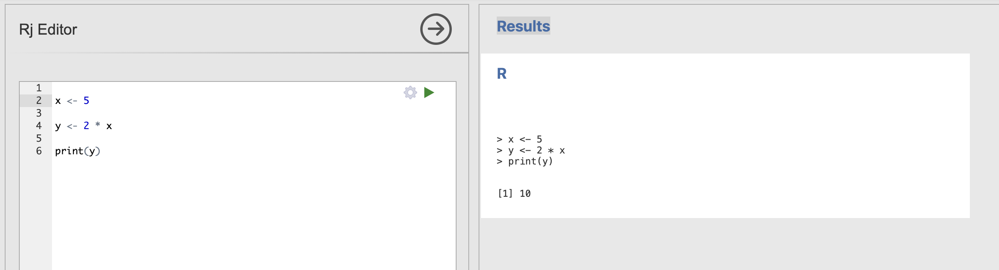
What does this R code do? what is the value of x, y and z?
x <- 10 + 10
y <- sqrt(16)
z <- x / yTry copying out and running the code in Rj.
You can add some print functions to see the value of the intermediate variables x and y as well. Try adding print(x) on the line immediately after x is defined.
Talk to your tutor if you’re getting stuck.
The final answers:
x is 20 and y is 4, so z = 20 / 4 which is 5.
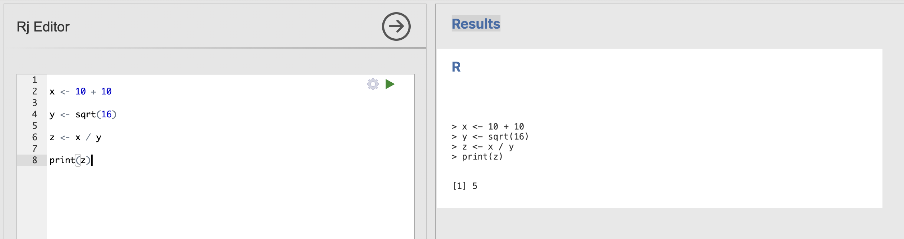
Rj has a special feature that the data loaded into our spreadsheet is always contained in a special variable named data. We can refer to this data variable to view and run analyses on our dataset.
5. Accessing the data table in Rj
Take a moment to load the data file into Jamovi and compute the descriptive statistics for the big five personality factors again.
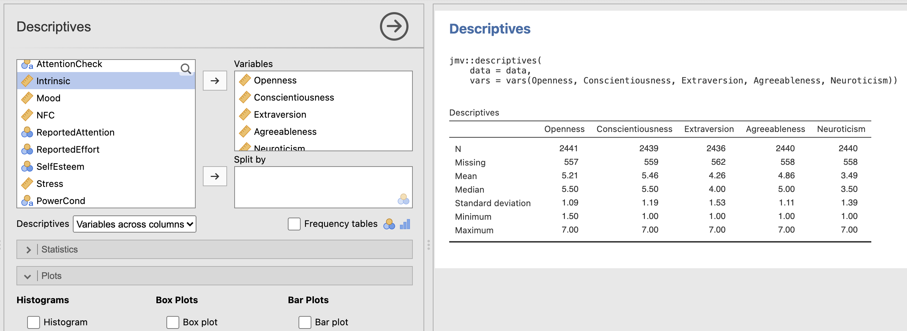
The data we have loaded into our Jamovi session can be accessed in Rj with the data variable. Jamovi automatically makes the data available for us in the R environment.
We can view and interact with the data here as well. For example, to view the first few rows of the dataset you can run the head function and pass in data as an argument.
head(data)and to view the last few rows, you can do the same with the tail function.
tail(data)Often, we’ll only want to work with a subset of the columns in a data frame at any given time. We can access individual columns using the dollar operator. For example, this code will access the age column within the loaded dataset.
data$ageLet’s break this command down into its pieces:
| R code | Meaning |
|---|---|
data |
this is the name of the whole data array we have loaded in |
$ |
this is a separator that R uses to help us access subsections of datasets |
age |
This is the name of a single column we want to access |
Can you access the column of Mood scores from the same dataset?
You can use the head function to see the list of all available columns in the dataset. The example above accesses the ‘age’ column, you can tweak this to extract the mood data instead.
The final code should look like this
data$MoodWe can also apply functions to these variables. R includes a wide range of standard mathmatical functions that we can use for common computations. This code computes the mean of the age data in our dataset.
mean(data$age)Try running this in Rj. You should get the answer 19.3 - this matches the value we computed using the descriptives analysis last week.
Similarly, the following function computes the standard deviation
sd(data$age)If you run this, you should get the answer 3.808.
6. Running desriptive statistics using Rj
Ok, back to statistics! How can we use our new R skills to compute statistics?
The trick is to understand that all the analyses in Jamovi are actually carried out by functions in R. Each analysis we can select from the top ribbon in Jamovi corresponds to a function that can be called in the code. Similarly, all of the options that we select in the analysis, dialogue boxes, correspond to arguments for that function. Let’s take a look in practice.
Jamovi provides a collection of R functions that correspond to each analysis dialogue box in Jamovi. This package of functions is named jmv. Thejmv function that computes descriptive statistics is called:
jmv::descriptivesHere we first name the jmv package specify the descriptives function within it (this link is made with the two colons).
We can compute the descriptive statistics for age by passing the data into the function and specifying that we want to use the age variable. Try running the following:
jmv::descriptives(data, vars='age')and you should generate the following result table.
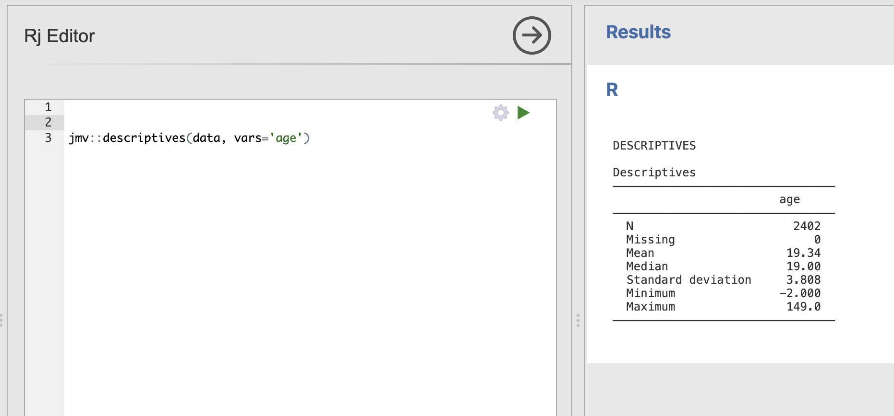
You might notice that we still have the unusual ages in this analysis, we’ll discuss how to remove them in the next section
Jamovi provide a lot of documentation on the descriptives function. This lists every single option that can be passed into jmv::descriptives. There is an option here for every single checkbox and selector in the main Jamovi dialogue.
The following code additionally computes a histogram by adding the hist argument.
jmv::descriptives(data, vars='age', hist=TRUE)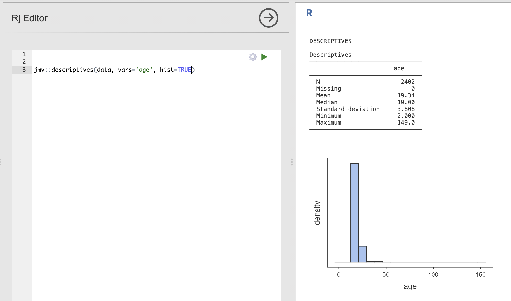
We can end up specifying a lot of these options. Sometimes it can be a good idea to split the function across multiple lines. This is fine as long as the parentheses are in the right place and there are commas in between each option.
This code computes descriptive statistics including the skewness, interquartile range and mode.
jmv::descriptives(data,
vars='age',
skew=TRUE,
iqr=TRUE,
mode=TRUE,
hist=TRUE
)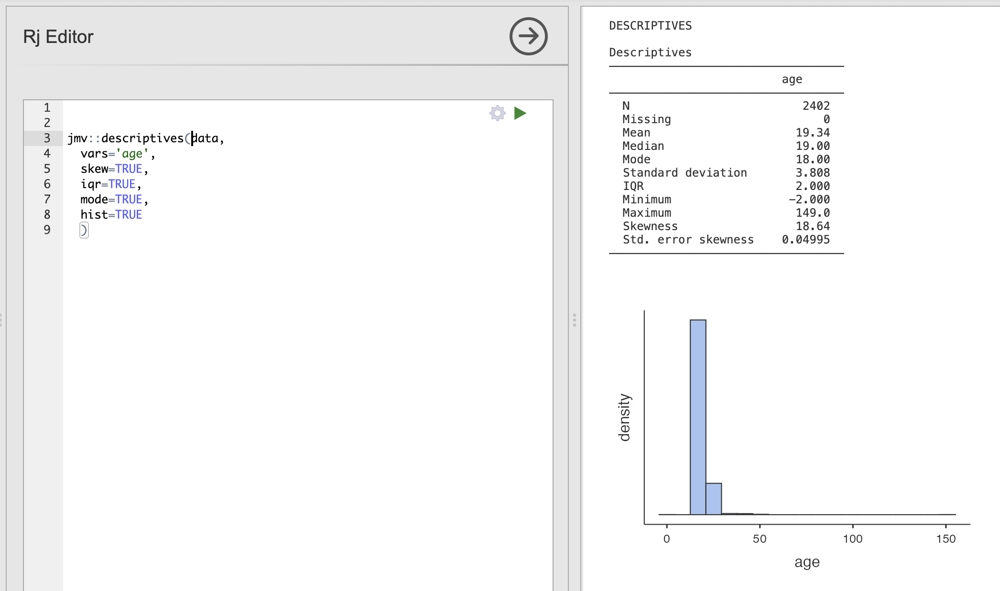
Of course, we could run these analyses by hand. The main advantage here is that we can automate the selection of critical options and reduce the possiblity of mistakes when communicating analyses within teams. As long as we have this line saved, we can rerun it on new datasets without having to recheck every box by hand.
Use the examples above and the JMV documentation on the descriptives function to write a function definition that does the following.
Compute the core descriptive statistics for the Openness variable, make sure to include the range and a boxplot.
Take a look at the ‘range’ and ‘box’ options in the documentation page.
Be careful with the spelling of each argument!
The final code should be:
jmv::descriptives(data,
vars='Openness',
range=TRUE,
box=TRUE
)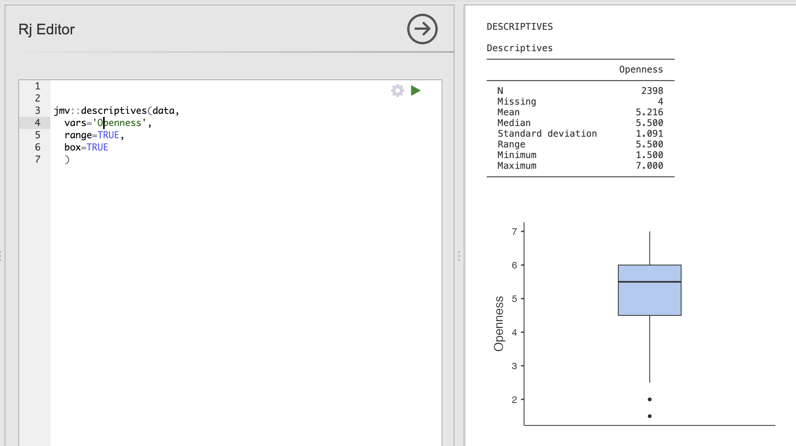
7. Selecting rows of data using the filter() function
Remember that last week we very carefully removed several participants who had entered unrealisic or impossible ages into the datasets. This may have been an accident or mistake but either way we should not use this data. Our examples so far have just used all the data.
R and Rj make it very easy to clean data without the boring, manual work we did last week. R can do the hard work and we can avoid scrolling through very large datasets by hand. Sounds good!
The first thing we can do is investigate what range of responses that people actually gave when asked about their age. To do this we can use a new function called unique(). This takes a column of a dataset as an input and returns a list of all the unique responses that it contains.
Load up an Rj Editor window (or continue in your old one) and run unique() on the age data.
The result should look like this:
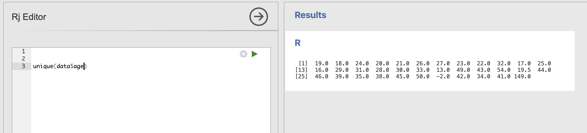
Most of these responses are fine but, as we saw last week, there are a lot of strange ones. Most importantly, we can find the extreme values that are very likely errors during data collection (-2 and 149)
We need to remove these from our analysis to get the most accurate results.
To do this we’re going to use an R library named dplyr (short for ‘Data Pliers’, see their documentation here). This is an extremely powerful library that is very widely used across the world.
To use dplyr, we first need to load the library into Rj by adding the following line to our code.
library(dplyr)This tells Rj that we want to use the functions from this library.
The key function we need today is filter() - this extracts rows from a dataset based on logical conditions that we specify in the code. We are going to specify two arguments, firstly we will pass in the data and secondly we will specify the condition.
In this example we extract only the rows in which participants have an age above 20.
library(dplyr)
filter(data, age>20)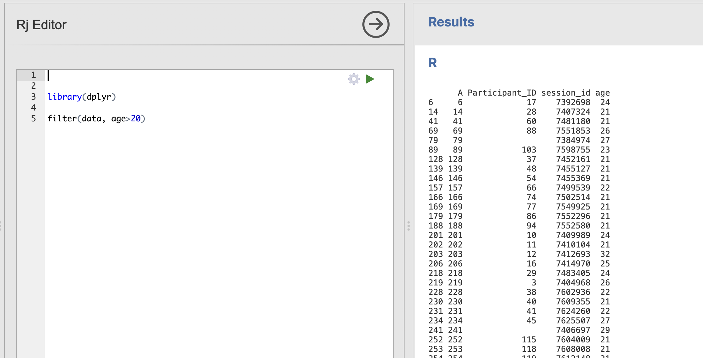
Notice that the dataset printed in the right hand window now only has values from the participants who are older than 20.
We can even specify multiple options - here we extract rows with participants older than 20 but still 23 or younger.
library(dplyr)
filter(data, age>20, age<=23)Next, to recreate our data tidying form last week, we need to extract the rows of participants who are older than -2 and younger than 149.
These values might be too specific and might not apply to every dataset. We can apply some common sense and suggest some broad, but much more sensible boundaries for a student population. We also save the result into a variable we can reuse later.
tidy_data <- filter(data, age > 15, age < 60)And finally, we can combine this with our call to jmv::descriptives to both filter our data to only the rows we want to use and compute the descriptive statistics on the result.
tidy_data <- filter(data, age > 15, age < 60)
jmv::descriptives(tidy_data, vars='age')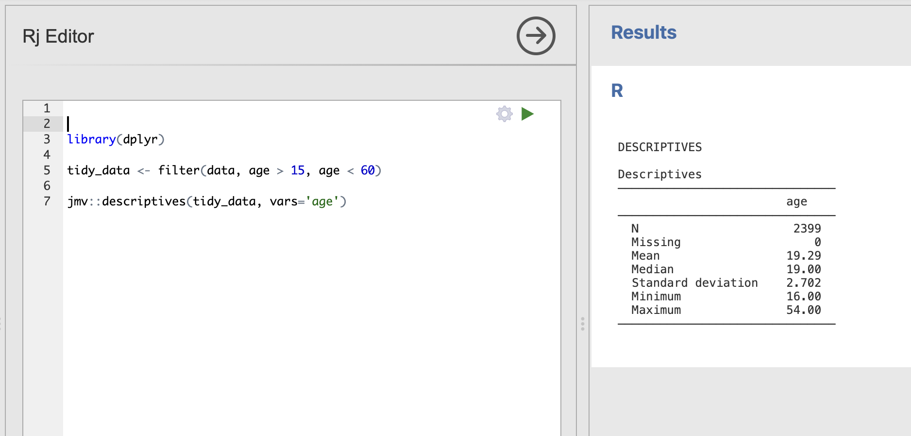
Practice changing the age conditions to a few different options to see the difference it makes to the descriptives analysis. What happens when you set a condition that results in zero valid participants?
Use the information in this tutorial to compute descriptive statistics for the Openness variable from Introverted participants. In other words - what is the mean Openness score for participants who are more Introverted than Extraverted.
Compute the core descriptive statistics for the Openness variable, make sure to include the median and a histogram
To extract the data rows for Introverted participants we want to extract rows where the Extraversion score is less than 3.5
The final code should be:
library(dplyr)
tidy_data <- filter(data, Extraversion < 3.5)
jmv::descriptives(tidy_data, vars='Openness')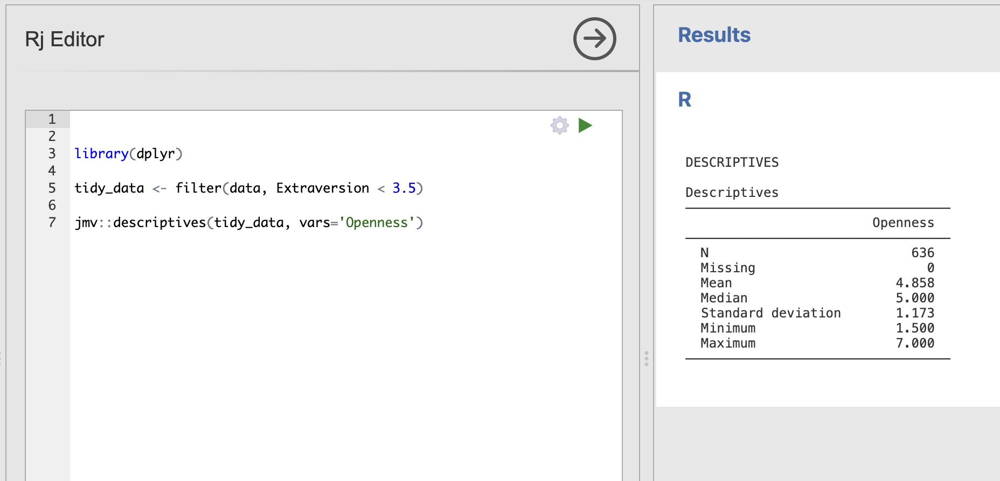
8. Summary
It probably seems like a small difference so far. After all, we same results for our analysis using the check, boxes in Jamovi or the code in R. The Jamovi analysis is certainly quicker to run for the first time and it’s more convenient when exploring your data.
However the R code has several crucial advantages.
- The R code is transparent about what is actually being run to generate the results and by sharing this code, we enable others to repeat our analysis. This makes it really straightforward to run and re-run identical analyses in situations where we need to be really sure that everybody has done the same thing. For example, if we want to be certain that two data sets have been analysed in an identical way then that our code would be the best way to do this.
- R code is the best way to share what we’ve done with the rest of the world. It is common practice for modern academic public it to include the code that was used to generate the results in the paper. This way everybody who wants to check can make sure they fully understand what the authors of the paper have done.
Finally, over the course of the semester we’ll see that R allows us to do much more than what is possible in Jamovi. We can define blocks of R code that can tidy-up and arrange our data, run multiple analyses and generate tables & figures all in one go. Much easier that clicking through all the menus each time we want to rerun an analysis!